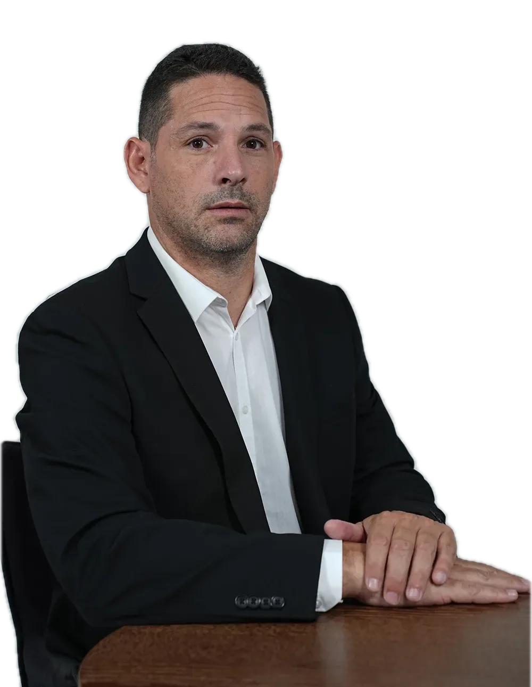

ירון זינמן Yaron Zinman

משרד עורכי דין בקריית מוצקין. נזיקין, דיני עבודה ומקרקעין.A law office in Kiryat Motzkin. Torts, employment and real estate.
4.9מ-19 ביקורות בגוגלfrom 19 Google reviewsמי יושב מולכםWho sits across from you
עו״ד ירון זינמן. כך תיארו אותו לקוחות בגוגל:Adv. Yaron Zinman. In his clients’ words on Google:
- דירוג בגוגלGoogle rating
- ביקורותReviews
- תחומיםPractice areas
שלושה עמודיםThree pillars
התחומים שמופיעים על כרטיס הביקור של המשרד.The fields printed on the office’s business card.
-
נזיקיןTorts
תביעות על נזק שנגרם לכםClaims for harm done to you
-
דיני עבודהEmployment law
הזכויות שלכם בעבודהYour rights at work
-
מקרקעיןReal estate
דירות, בנקים, משכנתא ותמ״אHomes, banks, mortgages, TAMA
איך מתחיליםHow to begin
כמה מילים בוואטסאפ, והשאר בפגישה.A few words on WhatsApp, the rest in person.
- מסמנים נושאTick a subjectעל גב הכרטיסon the back of the card
- בוחרים איך נוחPick what suits youשיחה או פגישהa call or a meeting
- שולחים לירוןSend it to Yaronההודעה כבר כתובהthe message is already written
מ-19 ביקורות from 19 reviews
חמש ביקורות של חמישה כוכבים, מילה במילה.Five 5-star reviews, translated from Hebrew.
-
דקלה דטינקה כהן״הגעתי לעו״ד על פי המלצה חמה, מייד היה קשוב למצב, הסביר על התהליך בנינוחות ורוגע, ענה על כל השאלות בצורה מקצועית מאוד והחל לעבוד על כתב התביעה לשביעות רצוני.״
“I came to the lawyer on a warm recommendation. He was immediately attentive to the situation, explained the process calmly and patiently, answered every question very professionally and began work on the statement of claim to my satisfaction.”
-
Natane S״קיבלתי המלצה מהיועץ למשכנתא, וגיליתי עו״ד ענייני, מקצועי, מסביר בצורה מעולה, זמין בכל עת, קשוב, ואכפתי, פשוט עזר לנו לעבור בצורה חלקה את כל הפרוצדורות של בנקים, תמ״א וכו׳.״
“Our mortgage adviser recommended him, and I found a lawyer who is to the point, professional, explains things excellently, available at any time, attentive and caring. He simply helped us get smoothly through all the procedures with banks, TAMA and so on.”
-
ראו שי״חוויה מצוינת, שירות מקצועי, יחס אישי ואדיב, ואווירה שנותנת ביטחון מהשנייה הראשונה. טיפל בעניין בצורה מקצועית ויעילה, ובהחלט אפשר לסמוך עליו.״
“An excellent experience: professional service, personal and courteous treatment, and an atmosphere that gives you confidence from the first second. He handled the matter professionally and efficiently, and you can certainly rely on him.”
-
danielle zauberman״קיבלתי שירות מצויין מהמשרד של ירון! ירון היה ענייני מהרגע הראשון, מקצועי, נתן מענה מהיר והיה זמין תמיד. והכי חשוב בסופו של דבר עזר לי לקבל את מה שמגיע לי!״
“I got excellent service from Yaron’s office! Yaron was to the point from the first moment, professional, answered quickly and was always available. Most important of all, in the end he helped me get what I was owed!”
-
טל ענתבי״תודה רבה על טיפול יעיל ומהיר. המקצועיות שלך ראויה להערצה. המלצתי לעוד חברים להשתמש בשרותך.״
“Thank you very much for efficient, quick handling. Your professionalism deserves admiration. I’ve recommended your services to more friends.”
שאלות קצרותShort questions
באילו תחומים המשרד עוסק?Which fields does the office handle?
נזיקין, דיני עבודה ומקרקעין, כפי שמופיע בכרטיס הביקור של המשרד.Torts, employment law and real estate, as listed on the office’s business card.
איפה המשרד?Where is the office?
ברחוב שושנה דמארי 4 בקריית מוצקין. המפה למטה.At 4 Shoshana Damari St, Kiryat Motzkin. The map is below.
מתי אפשר להגיע?When is the office open?
ראשון עד חמישי 9:00–18:00, שישי 9:00–13:00, שבת סגור.Sunday to Thursday 9:00–18:00, Friday 9:00–13:00, closed on Saturday.
איך פונים?How do I get in touch?
בטלפון או בוואטסאפ למספר 050-574-7660, או במייל yzinman.law@gmail.com.By phone or WhatsApp on 050-574-7660, or by email at yzinman.law@gmail.com.
ניפגש במשרדMeet at the office
שושנה דמארי 4
קריית מוצקין4 Shoshana Damari St
Kiryat Motzkin